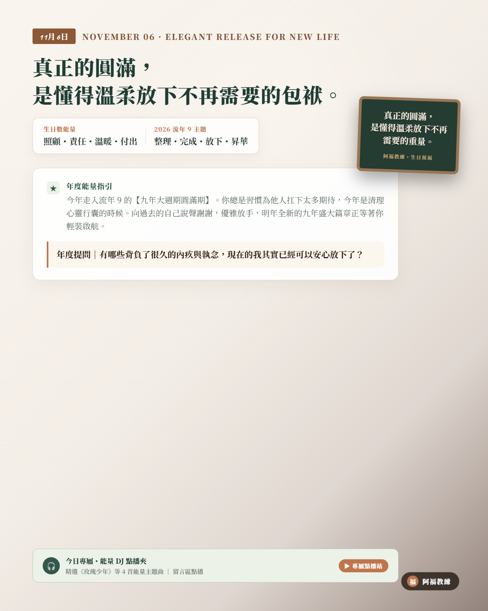

NOVEMBER 06 · ELEGANT RELEASE FOR NEW LIFE
11/06 壽星
生日快樂
「真正的圓滿，是懂得溫柔放下不再需要的包袱。」
生日數能量：照顧・責任・溫暖・付出
流年 9 主題：整理・完成・放下・昇華
A YEAR OF SPECIAL MASTERY
清理心靈行李箱，向過去致敬，輕裝迎接下個九年
今年走入流年 9 的【九年大週期圓滿期】。你習慣把所有人的責任扛在自己身上、常常委屈自己顧全大局，但今年是宇宙為你安排的「大掃除時間」。向過去努力打拼的自己深深鞠躬說聲謝謝；對那些已經不再適合的人際牽絆、過期執念溫柔道別。唯有把雙手空出來，明年全新的九年盛大篇章才能為你裝滿新的精彩！
年度提問｜「有哪些背負了很久的內疚與執念，現在的我其實已經可以安心放下了？」
YOUR ENERGY DJ · 6 號人的流年 9 能量點播站
當甘願付出的 6 號人，走進斷捨離的流年 9
身為天生充滿愛與責任感、總是捨不得別人受苦的 6 號人，你的弱點就是「太念舊、太容易心軟、太害怕放手」；然而今年走入「流年 9」的週期大收尾，宇宙要你學會的功課是「優雅放手」。當習慣過度承擔的你，遇上必須斷捨離的年份，容易陷入內疚與焦慮。今天 DJ 特別為 6 號人的你精選流年 9 昇華歌單——溫柔卸下你的重擔，原諒過去、擁抱圓滿，輕盈邁向新生！
LIFE NUMBER 9 · CLASSROOM PLAYLIST
9 號人課堂激勵與歡唱歌單（給 6 號人的流年 9 圓滿歌單）
這份歌單來自阿福教練生命靈數課堂中，專為「博愛昇華、感恩整理、釋放包袱與圓滿總結」所調配的經典曲目。習慣照顧他人的 6 號壽星，在進入流年 9 的大收官考場時，聽這 8 首歌，就像在暖冬泡一場溫泉大澡——洗盡鉛華、溫柔放手，輕裝迎接下一個黃金九年！
- 01島嶼天光滅火器 Fire EX.｜願景開場・以集體希望與博愛胸襟帶出人道關懷，看見黑夜後的破曉晨光（YouTube 搜尋）
- 02美麗島羅大佑｜人文省思・用在地人文視角引導回顧生命足跡，感受土地與生命的深層給予（YouTube 搜尋）
- 03玫瑰少年蔡依林｜尊重包容・將同理與正義感延伸到擁抱自己的不完美，溫柔接納生命每個階段（YouTube 搜尋）
- 04彩虹張惠妹｜接納支持・溫暖包容的無條件支持，適合學會放下批判與執著（YouTube 搜尋）
- 05憨人五月天｜純粹堅持・不計較得失的憨人精神，把一生所學的大愛化為踏實行善（YouTube 搜尋）
- 06魚仔盧廣仲｜在乎的人・將心中的大愛收回身邊最珍視的人，帶著感恩向過去溫柔告別（YouTube 搜尋）
- 07我的未來不是夢張雨生｜理想落地・把過去九年的努力化為前進的底氣，篤定迎接全新的生命起點（YouTube 搜尋）
- 08明天會更好群星｜大合唱收束・以共同的祝福為舊階段畫上圓滿句點，昂首闊步迎向全新九年（YouTube 搜尋）
歌單依《生命靈數9號人_激勵九首與歡唱點播歌單》整理。點播連結均為 YouTube 官方影音搜尋結果；播放時請依授課場地與著作權規範使用。
願你帶著滿腹智慧與清明，從容優雅地為舊階段畫上圓滿句點。
👉 11/06 壽星快來留言【🕊️】！為新的一歲許下最棒的願望！
#11月6日生日快樂 #生命靈數 #生日數6 #流年9 #阿福教練